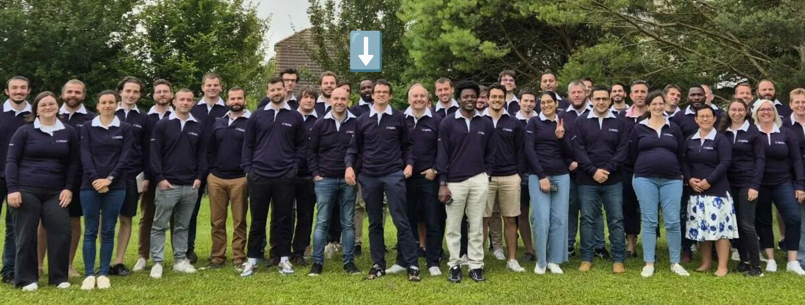

Experience at Exxact Robotics from Jan. 2021 to Feb. 2025.
I have 4+ years of professional experience working with deep learning systems,
data analysis, and robot learning at Exxact Robotics.

AI Data Engineering, Quality and Infrastructure
- I analyzed large-scale learning datasets using queries and data processing scripts (analyzing, augmenting, and transforming the data).
- I collaborated with data/annotation engineers to develop automated data pipelines with the FiftyOne App.
- I integrated AI models to automate manual tasks (pre-annotation, request handling, active learning tools) while maintaining high data quality.
- I worked closely with agronomists and annotation engineers to support new model architectures and dataset requirements.
AI Training Infrastructure, Post-Training and Models Evaluation
- I led post-training research to improve the performance and generalization of AI models.
- I developed and implemented novel approaches to model fine-tuning, optimization, and evaluation.
- I designed and conducted experiments to better understand model behavior and to identify and mitigate risks related to reliability.
- I collaborated with other engineers from product teams to align model development with company goals.
- I worked with cross-functional teams to deploy AI solutions in real-world applications.
- I focused on improving user experience and model performance.
- I contributed to cutting-edge research and brought new insights to the AI/Vision team to solve small data problems and AI model deployment.
- I collaborated with other Exxact Robotics team members to develop and continuously improve the full autonomy stack.
- I have a publication record in developing and deploying AI model solutions (image forensic, active learning, precision agriculture, conformal prediction, etc.).